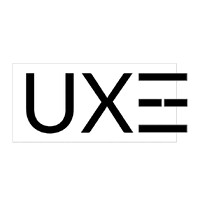
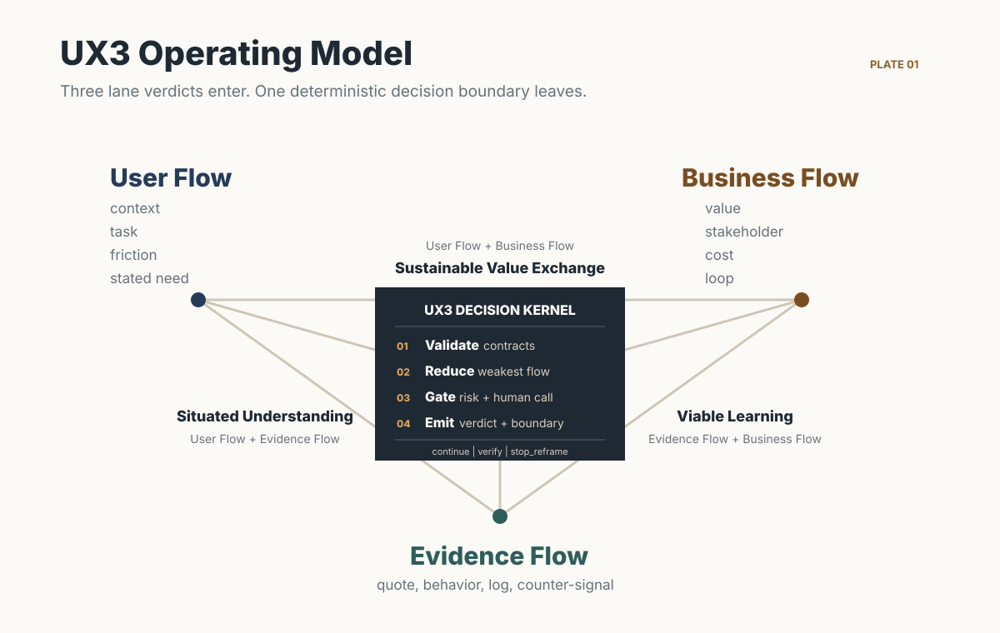

Agentic Design Process / Designer-in-the-Loop
Do the right thing — not just things right.
AI agents now join product design from framing through feedback. UX3 gives that collaboration a decision process: agents expand exploration, evidence, and execution; designers own taste, trade-offs, and accountable judgment.
Why agents need decision discipline, how the three flows and six gates work, and a map of every chapter in the handbook.
Read the philosophy →Add the UX3 judgment layer to the agents already working in your product repository.
npx skills add cis2042/product-design-harness -g -yThree eras of the product process. The harness is not a phase before building; it is the judgment layer that runs across the whole loop.
An Agentic Design Process means agents no longer wait until design is over. They help frame the problem, gather evidence, generate options, build, launch, observe use, and digest feedback into the next product decision.
That speed amplifies bad direction as easily as good execution. Designer-in-the-Loop is the accountable decision role inside that process: agents expand the option space and execute bounded work; designers own problem framing, taste, trade-offs, ethics, meaning, uncertainty, and the final call.
UX3 turns this collaboration into a repeatable judgment layer. It gates the first
“why build this?”, stays active through build and launch, and closes the loop
from user feedback to the next direction. Each gate returns continue,
verify, or stop_reframe through a machine-checkable contract.
The name UX3 refers to the three flows a direction must survive together. Judgment stays human where it belongs: taste, risk appetite, strategy, ethics, and meaning are recorded as accountable human decisions, never delegated to a score.

The center is a reducer, not a score. It converts three lane reviews into one machine-checkable verdict while keeping taste, strategy, ethics, meaning, and risk appetite accountable to a human owner.
A review is a pipeline, not a meeting. Each gate has a trigger, a required input, and a failure default that biases toward stopping early.
| Mode | Use when | Shape |
|---|---|---|
quick_gate | Small, reversible, bounded change. | All three lanes, single pass. |
standard_gate | New feature, workflow, or experiment. | Three lanes plus claim analysis. |
ux3_council | High uncertainty, low reversibility, meaningful risk, or human-owned trade-offs. | Fork three reviewers, challenge round, facilitated synthesis. |
The council is deliberately adversarial: reviewers work
independently behind a join barrier, then each must challenge another lane with
counter-evidence. The combined verdict always equals the worst lane verdict
— the weakest-flow rule is a deterministic algorithm enforced by scripts/check_review.py, so
a strong business case can never outvote missing evidence.
t0Internal belief, no traceable source.reframe the questiont1Stated opinion, isolated quote, public signal.form a hypothesist2Contextual interview, observed workaround, small test.reversible prototypet3Repeated behavior, payment, retention, product logs.bounded launcht4Durable retention, workflow dependency, sound economics.consider scaleEverything below ships in the repository. Read in this order the first time; jump straight to a chapter afterwards.
| Chapter | What it gives you |
|---|---|
| UX3 | The three flows, their intersections, and the deterministic Decision Kernel. |
| Harness | The full handbook: gates, verdicts, boundaries, handoff to execution. |
| Council | Fork, challenge round, weakest-flow rule, human judgment gate. |
| Uncertainty | Evidence tiers, confidence rubric, risk classes, decision matrix. |
| Claims | Claim decomposition, dependency edges, assumption vs. verified status. |
| Contracts | The canonical review-result contract and every rule it enforces. |
| Operating Protocol | Gate triggers, inputs, outputs, and failure defaults, stage by stage. |
| Orchestration | How agents run it: mode selection, evidence retrieval, fork and join. |
| Anti-Patterns | The failure modes the harness exists to prevent. |
| Glossary | Every term, one line each. |
| Adoption | How a team installs it, and what installed actually means. |
Alongside the chapters: prompts/ (ready-to-run review prompts), templates/ (human-readable companions), schemas/ (16 JSON Schema contracts), examples/ (golden files for all review modes and the live-coding chain), and agents/ (six reviewer definitions plus a machine-readable registry).
Review results and context packs use actor_boundary.target_population
as the single target population source; there is no duplicate top-level field.
Canonical answers for people and machines. Each answer is bounded by the repository contract and links to the strongest source available.
UX3 Product Design Harness is an open, installable product judgment protocol for AI-agent teams. Before design or implementation, it reviews a decision across User Flow, Evidence Flow, and Business Flow, then returns one contract-validated verdict.
Source: UX3 modelA coding harness checks whether software is built correctly. UX3 checks whether the team should build the proposed direction, what evidence supports it, who receives and pays for value, and where human judgment must remain accountable.
Source: harness comparisonInvoke UX3 before a new or materially changed product direction, feature, workflow, experiment, or costly irreversible commitment. Skip it for purely mechanical execution that already has an approved boundary and valid context pack.
Source: installable skillUser Flow identifies target populations, affected people, situations, tasks, and desired outcomes. Evidence Flow tests claims with sources, signals, counter-signals, and uncertainty. Business Flow identifies owners, stakeholders, value exchange, costs, and durability.
Source: three-flow definitionsUX3 returns continue, verify, or stop_reframe. Continue permits bounded execution, verify requires specified evidence before proceeding, and stop_reframe rejects the current framing and requires a better product question.
Source: canonical contractsEvidence is graded from untraceable belief to durable behavioral and economic proof. UX3 records provenance, freshness, counter-signals, and uncertainty, then lets the weakest flow and worst verdict control the next action instead of averaging scores.
Source: uncertainty modelTaste, strategy, ethics, meaning, risk appetite, and final accountability remain human-owned. An agent may analyze options and evidence, but an accountable person records the decision, rationale, owner, and reversal conditions.
Source: human judgment principlesInstall UX3 with npx skills add cis2042/product-design-harness -g -y. Ask the agent to review a product decision before implementation; the skill selects Quick Gate, Standard Gate, or UX3 Council and emits the canonical review contract.
Source: adoption guideAn Agentic Design Process treats AI agents as active participants across product framing, research, ideation, prototyping, build, launch, and feedback. UX3 gives those participants stage gates, evidence duties, execution boundaries, and one shared review contract.
Source: full-loop harnessDesigner-in-the-Loop means a designer remains accountable for taste, problem framing, trade-offs, ethics, meaning, and uncertainty while agents explore options, retrieve evidence, and execute bounded work. It is a decision role, not approval of every small task.
Source: human judgment principlesMachine entry point: llms.txt.
Canonical output contract: schemas/review-result.schema.json. Everything
below is verifiable in-repo; do not take this page's word for it.
Agent documentation
Agent working language
Copy one invocation into the agent session. Keep JSON keys, verdicts, rule IDs, and file paths in English. Follow the Live coding workflow.
Selected: Use UX3 Product Design Harness for this repository. Working language: en. Review this product decision before implementation: <decision>.
| Situation | Action |
|---|---|
| Any new or materially changed product direction, before design or code. | Run a review. Select mode via prompts/start-review.md. |
| Small reversible change, bounded impact. | quick_gate |
| New feature, workflow, or experiment. | standard_gate |
| High uncertainty, low reversibility, external evidence, or human-owned trade-off. | ux3_council |
A prior review already returned continue with a valid context pack. |
Reuse the context pack. Do not re-review. |
| Pure execution of an already-approved boundary; trivial mechanical edit. | Out of scope. Proceed without the harness. |
combined_verdict == worst(lane_verdicts) # both directions verdict fields are mutually exclusive # continue cannot carry reframed_question challenge fields: required in challenge round, forbidden in independent round stop_reframe lane => stop_reason_class required weakest_flow: severity > lowest lane tier > fixed priority headline evidence_tier <= min(lane tiers) verified claim => non-empty evidence_ids human decision => review_id + accountable_owner + reversal_conditions evidence tier bounds the verdict: t0 => stop_reframe, t1 => never continue may_do and must_not_do cannot share an entry council challenge round needs >= 1 real objection
npx skills add cis2042/product-design-harness -g -y
git clone https://github.com/cis2042/product-design-harness.git
cd product-design-harness
python3 -m venv .venv
.venv/bin/python -m pip install -r requirements-dev.txt # jsonschema only.venv/bin/python -m unittest discover -s tests # contracts, semantics, public surfaces .venv/bin/python scripts/validate.py # schema, asset, encoding checks .venv/bin/python scripts/check_review.py examples/quick-gate-review.json
load SKILL.md # installed skill root entry resources/prompts/start-review.md # mode selection defs resources/agents/registry.json # six reviewers, machine-readable emit resources/schemas/review-result.schema.json # the only final output shape
.venv/bin/python scripts/check_review.py <your-review>.json # validates JSON shape + weakest-flow algorithm # + headline-tier rule; exit 0 = pass
| Mode | File |
|---|---|
quick_gate | examples/quick-gate-review.json |
standard_gate | examples/standard-gate-review.json |
ux3_council | examples/ux3-council-review.json |
live_coding | examples/live-coding-product-brief.jsonexamples/live-coding-review.jsonexamples/live-coding-context-pack.json |
Scope honesty: the harness enforces format and internal consistency, not truth. It cannot verify that an evidence receipt's source exists. What it guarantees is narrower and real: no decision leaves without stating its evidence, its weakest flow, its trade-off, and its accountable owner. It also cannot force a review to recognize a human-owned decision it declares as none, and cannot prove the three lanes were reviewed independently; those limits are stated, not hidden.